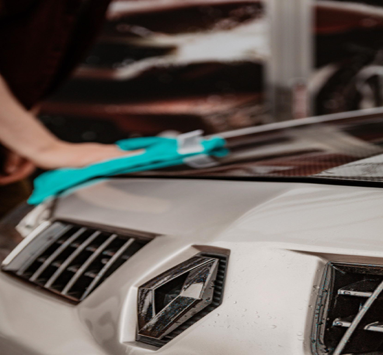
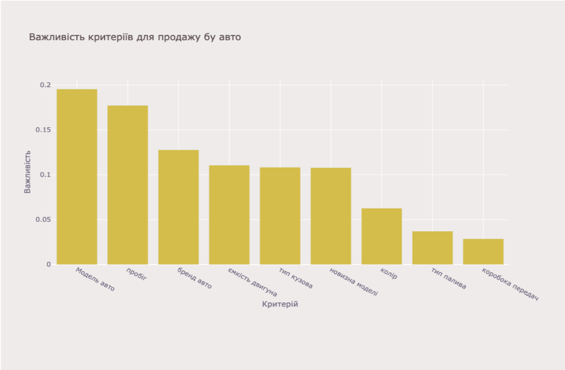

Зазвичай найкращим способом оцінити вартість бу авто є дослідити ринок, та знайти схожі авто на ресурсах, описаних
у статті "Як безпечно купити авто в інтернеті», або ж скористатися нашим розумним калькулятором, і за мілісекунди
отримати оптимальну оцінку авто. Але зважайте, що на ціну також може впливати зовнішній вигляд та внутрішній стан
авто.
Для підвищення ціни б/у авто потрібно загалом є наступні поради:
Гарний зовнішній вид. Тріснуте скло замінюємо на дешеве, китайського виробництва, тріснутий або розколотий
пластик бамперів робимо в спеціалізованому автосервісі (найпопулярніші згідно шукачів -
boschcarserviceauto-spec ). Після цього їдемо на полірування кузова.
Можна, звичайно, і самому постаратися, але без практики результат може розчарувати. І не забуваємо про диски!
Побиті і обгризені корозією, вони будуть псувати весь вигляд. Тому має сенс відправити їх на шліфування і
фарбування. Сумарні витрати на такі роботи навряд чи заберуть кілька сотень $, проте допоможуть потім виручити
до тисячі зайвих $. Також рекомендується провести хімчистку салону та багажнику. 
Немає сенсу намагатися змінити цифру на одометрі, адже покупець з легкістю може звернутися до офіційного
СТО.
Головні фактори вартості бу авто які було отримано аналізуючи дані з ресурсу autoria:

На запитання «чи є сенс робити ремонт авто перед його продажем?» можна відповісти досить простою формулою:
розпитайте в декількох автосалонах вартість ремонту вашого авто, розрахуйте середню вартість. Тепер цю суму
додайте до нинішньої вартості «битого» авто і запитайте себе, чи стали ви б купувати автомобіль в такому стані за
таку ціну? Якщо ні, то продавайте у такому стані.